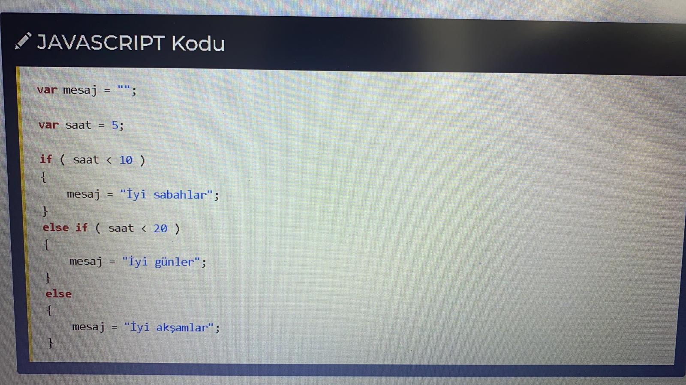

IF KOŞUL YAPILARI

Örnekte saat değişkeni 5 olarak belirtilmiştir. Bu değişkenin sayısal değerine göre mesaj değişkeninin şekillenmesi isteniyor. Eğer saat 10'dan küçükse "İyi sabahlar", eğer 20'den küçükse "İyi günler", hiçbiri değilse "İyi akşamlar" demesi sağlanıyor. Dikkatli incelendiğinde parantez içerisinde koşullara yer veriliyor.
if ( koşul sağlanıyorsa ) { şunları yap }
else if ( koşul sağlanıyorsa ) { şunları yap }
else { şunları yap }
Koşul oluştururken mutlaka IF ile başlanır. Parantez içinde koşul belirtilir ve yapılacaklar kıvrımlı parantez içinde yazılır.
ELSE IF kullanmak için öncelikle IF kullanmış olmak gereklidir. Yani IF kullanmadan ELSE IF ile bir kontrol yapılamaz. "O olmadı bari bunu dene" anlamı taşır.
ELSE kullanırken parantez açılmaz ve koşul yazılmaz. ELSE, diğer tüm if ve else ifler çalışmadıysa, yani hiçbir koşul sağlanılamadıysa yapılacak şeyi belirtir.